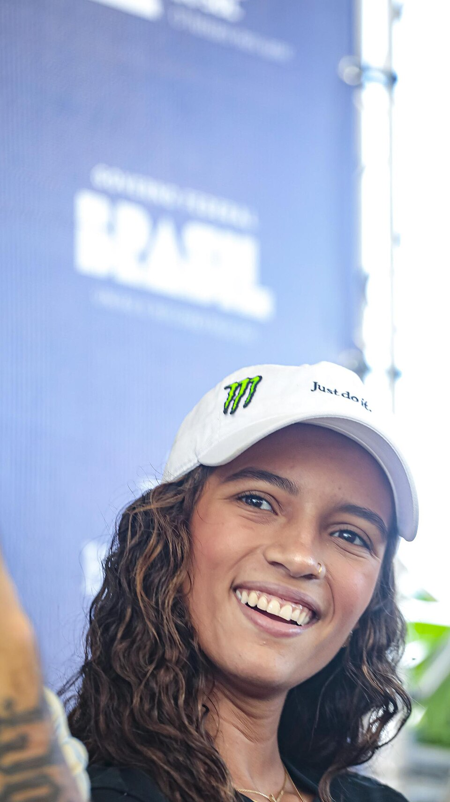

O Paraguai se tornou um dos principais centros do skate mundial em outubro de 2026. A capital Assunção recebe os World Skate Games, competição internacional que reúne diferentes esportes sobre rodas e inclui o Campeonato Mundial de Skate Street, uma das disputas de maior projeção do evento.
Com atividades programadas entre 11 e 18 de outubro, o Mundial de Street conta com uma delegação brasileira formada por nove homens e sete mulheres, segundo a relação divulgada pela CBSk.
O campeonato tem uma importância que ultrapassa a disputa pelas medalhas. Integrante do calendário internacional da World Skate, a competição distribui pontos relevantes para o ranking mundial, utilizado no processo de classificação para os Jogos Olímpicos de LA28.
Datas e horários
A programação oficial divulgada estabelece o período de 11 a 18 de outubro para as atividades do Mundial de Street, com treinamentos e diferentes fases competitivas.
As disputas acontecem no complexo do Comitê Olímpico Paraguaio, em Assunção.
A plataforma World Skate TV e o canal oficial no YouTube, com narração em inglês, também apresenta uma janela de transmissão dedicada ao Skateboarding Street, com programação publicada entre 14 e 18 de outubro para as fases competitivas exibidas ao público.
Cronograma completo:
- 11, 12 e 13 de outubro — sessões oficiais de treinamento
- 14 de outubro, 9h00 — Qualificatória masculina
- 15 de outubro, 10h00 — Qualificatória feminina
- 16 de outubro, 13h45 — Quartas de final masculina
- 16 de outubro, 17h15 — Quartas de final feminina
- 17 de outubro, 16h15 — Semifinal masculina
- 17 de outubro, 18h45 — Semifinal feminina
- 18 de outubro, 15h45 — Finais masculina e feminina
Em caso de chuva ou de condições climáticas desfavoráveis, horários e até fases podem sofrer ajustes de grade, remanejamentos ou adiamentos, algo que já entrou no radar do evento e que faz parte da natureza de competições de skate ao ar livre. Dentro dos próprios World Skate Games, a programação do Park teve alterações devido ao clima..
Brasil tem 16 skatistas na delegação
A presença brasileira é um dos grandes destaques do Mundial de Skate Street 2026. A CBSk divulgou uma relação com 16 atletas, distribuídos entre nove representantes masculinos e sete femininos.
A seleção combina skatistas com experiência olímpica, campeões mundiais, competidores consolidados no circuito internacional e nomes que chegam às primeiras experiências nesse nível.
Representantes no masculino:
- Wallace Gabriel
- Giovanni Vianna
- Ivan Monteiro
- João Lucas Alves
- Kelvin Hoefler
- Filipe Mota
- Gabryel Aguilar
- Matheus Mendes
- Sebastian Simonetto
Wallace Gabriel e Giovanni Vianna aparecem entre os principais nomes brasileiros da modalidade. Wallace ocupa a quarta posição do ranking mundial, enquanto Giovanni estava em sexto.
Kelvin Hoefler também representa uma das trajetórias mais importantes do grupo. Campeão mundial de Street em 2015, ele conquistou a medalha de prata nos Jogos Olímpicos de Tóquio 2020, disputados em 2021, e permanece como uma referência histórica do skate brasileiro.
Outro aspecto relevante é a presença de novos talentos. Sebastian Simonetto foi relacionado para sua estreia no circuito mundial, enquanto atletas como Filipe Mota, João Lucas Alves e Gabryel Aguilar ampliam as opções brasileiras na competição.
Representantes no feminino:
- Rayssa Leal
- Gabriela Mazetto
- Pâmela Rosa
- Duda Ribeiro
- Isabelly Ávila
- Maria Lúcia
- Bia Godoi
Rayssa Leal chega ao ciclo de 2026 com um currículo que inclui dois títulos mundiais de Street, conquistados nas edições de 2022 e 2024, além de duas medalhas olímpicas: prata em Tóquio e bronze em Paris 2024. A brasileira se consolidou como uma das principais figuras internacionais da modalidade.
Pâmela Rosa também apresenta credenciais importantes. Campeã mundial em 2019, a brasileira possui longa experiência em competições internacionais e representa uma geração fundamental para a consolidação do skate street feminino no Brasil.
Gabriela Mazetto, Duda Ribeiro, Isabelly Ávila e Maria Lúcia ampliam a presença nacional no campeonato. Bia Godoi, por sua vez, foi relacionada para sua estreia no circuito mundial.
A composição do grupo evidencia um aspecto relevante do skate brasileiro: a convivência entre atletas consagradas e uma geração que busca espaço nas principais competições internacionais.
Como funciona a classificação
A composição do quadro de participantes considera o ranking mundial da World Skate e as cotas destinadas aos países.
Os atletas situados entre os 30 primeiros do ranking mundial têm acesso à competição, respeitado o limite de seis skatistas por nacionalidade nessa faixa de classificação.
As vagas restantes também consideram as cotas nacionais, conhecidas como country quotas, que permitem ampliar a representação dos países nas categorias masculina e feminina.
Esse sistema combina desempenho internacional e representatividade, oferecendo oportunidades a competidores que ainda não ocupam as posições mais altas do ranking.
Durante a competição, os skatistas precisam avançar pelas fases previstas no regulamento, enfrentando uma redução progressiva do número de participantes até a disputa pelo título.
O que os juízes avaliam no skate street
Diferentemente de modalidades esportivas definidas por tempo, distância ou número de gols, o skate street utiliza avaliações técnicas para estabelecer as notas das apresentações.
Entre os elementos considerados estão dificuldade, execução, variedade, utilização dos obstáculos, estilo e consistência das manobras.
A modalidade combina a capacidade de executar sequências completas com apresentações de manobras individuais, conforme o formato estabelecido para cada fase.
Quedas comprometem a pontuação e alteram completamente a classificação. Por outro lado, uma manobra executada com alto grau de dificuldade e controle pode transformar o resultado de uma bateria.
Essa combinação ajuda a explicar por que o Street apresenta disputas tão imprevisíveis, nas quais atletas precisam administrar tentativas, escolher obstáculos e adaptar estratégias ao andamento da competição.
O que é o Mundial de Skate Street no Paraguai
A competição integra os World Skate Games ASU26, evento organizado entre 2 e 18 de outubro de 2026. A competição reúne diferentes modalidades esportivas vinculadas à World Skate, entidade internacional responsável pelos esportes sobre rodas.
A edição paraguaia foi apresentada oficialmente em março de 2026, com um programa que contempla 12 esportes, um e-sport e 41 disciplinas. Além das variações do skateboarding, estão presentes modalidades como patinação artística, patinação de velocidade, roller freestyle, hóquei sobre patins e scootering.
Os World Skate Games tiveram sua primeira edição em Nanjing, na China, em 2017. Depois passaram por Barcelona, em 2019, Buenos Aires, em 2022, e pela Itália, em 2024. A realização em Assunção representa o retorno do evento multiesportivo à América do Sul.
Dentro dessa programação, o skateboarding reúne diferentes especialidades, incluindo Street, Park, Vertical, Slalom e provas de downhill. Cada uma apresenta características próprias, equipamentos, obstáculos e critérios competitivos específicos.
Além das disputas de Street, Assunção também receberam o Mundial de Park, modalidade marcada por manobras em transições, curvas e obstáculos de diferentes alturas. A competição também contou com participação brasileira e teve suas decisões detalhadas na cobertura dos resultados finais do Mundial de Skate Park 2026, ampliando o panorama do desempenho nacional nas duas modalidades olímpicas do skate.
Los Angeles 2028
O Mundial de Skate Street 2026 também integra a trajetória competitiva dos atletas que buscam classificação para os Jogos Olímpicos de LA28.
Para os skatistas, o ranking mundial é um componente importante do processo classificatório. Os resultados em competições reconhecidas pela World Skate permitem acumular pontos e disputar posições dentro do sistema internacional.
O significado esportivo do campeonato, portanto, não se limita aos títulos mundiais. Um bom desempenho pode fortalecer a trajetória de um atleta ao longo do ciclo.
Para o Brasil, a presença de 16 representantes amplia as possibilidades de pontuação em diferentes posições do ranking e mantém o país inserido na disputa internacional pela classificação olímpica.
Dois Mundiais de Skate em 2026
Uma particularidade do calendário internacional ajuda a entender a realização dos campeonatos mundiais em São Paulo e no Paraguai durante o mesmo ano.
O Mundial disputado em São Paulo, em março de 2026, correspondia originalmente à edição de 2025. A competição estava prevista para Washington, nos Estados Unidos, mas foi adiada e posteriormente transferida para a capital paulista.
Já o campeonato realizado no Paraguai, em outubro, corresponde ao Mundial de 2026, integrado aos World Skate Games de Assunção.
Portanto, são competições de edições diferentes, embora realizadas no mesmo ano civil.
Essa distinção é importante para compreender o histórico dos campeonatos e a sequência das temporadas internacionais.
Para o Brasil, a competição reúne diferentes gerações que ajudaram a construir a posição do país na modalidade. De um lado estão atletas com títulos mundiais e medalhas olímpicas, como Rayssa Leal, Pâmela Rosa e Kelvin Hoefler. De outro, competidores que buscam consolidar seus nomes no circuito ou iniciar uma trajetória internacional.
A proximidade geográfica do Paraguai também coloca mais uma grande competição mundial de skate na América do Sul, depois das edições realizadas na região em anos anteriores.
Mais do que uma oportunidade de conquistar medalhas, o campeonato oferece uma medida do desenvolvimento técnico da modalidade, do equilíbrio entre os países e da renovação dos principais talentos do skate internacional.